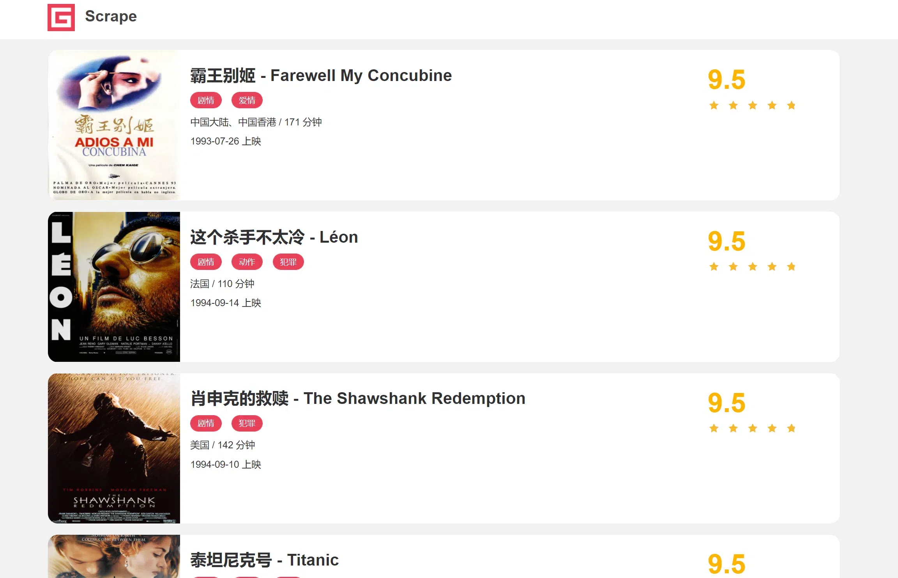

实列引入
看这么一个示例网站：https://static4.scrape.cuiqingcai.com/，如图所示。

这个网站在内部实现返回响应的逻辑的时候特意加了 5 秒的延迟，也就是说如果我们用 requests 来爬取其中某个页面的话，至少需要 5 秒才能得到响应。
下面我们来用 requests 写一个遍历程序，直接遍历 1~100 部电影数据，代码实现如下：
1 | import requests |
运行结果如下：
1 | 2021-05-31 17:42:33,963 - INFO: scraping https://static4.scrape.cuiqingcai.com/detail/1 |
每个页面都至少要等待 5 秒才能加载出来，因此 100 个页面至少要花费 500 秒的时间，总的爬取时间最终为 513.6 秒，将近 9 分钟。
基本了解
阻塞
阻塞状态指程序未得到所需计算资源时被挂起的状态。程序在等待某个操作完成期间，自身无法继续处理其他的事情，则称该程序在该操作上是阻塞的。
常见的阻塞形式有：网络 I/O 阻塞、磁盘 I/O 阻塞、用户输入阻塞等。阻塞是无处不在的，包括 CPU 切换上下文时，所有的进程都无法真正处理事情，它们也会被阻塞。如果是多核 CPU 则正在执行上下文切换操作的核不可被利用。
非阻塞
非程序在等待某操作过程中，自身不被阻塞，可以继续处理其他的事情，则称该程序在该操作上是非阻塞的。
非阻塞并不是在任何程序级别、任何情况下都可以存在的。仅当程序封装的级别可以囊括独立的子程序单元时，它才可能存在非阻塞状态。
非阻塞的存在是因为阻塞存在，正因为某个操作阻塞导致的耗时与效率低下，才要把它变成非阻塞的。
同步
不同程序单元为了完成某个任务，在执行过程中需靠某种通信方式以协调一致，我们称这些程序单元是同步执行的。
例如购物系统中更新商品库存，需要用“行锁”作为通信信号，让不同的更新请求强制排队顺序执行，那更新库存的操作是同步的。
简言之，同步意味着有序。
异步
为完成某个任务，不同程序单元之间过程中无需通信协调，也能完成任务的方式，不相关的程序单元之间可以是异步的。
例如，爬虫下载网页。调度程序调用下载程序后，即可调度其他任务，而无需与该下载任务保持通信以协调行为。不同网页的下载、保存等操作都是无关的，也无需相互通知协调。这些异步操作的完成时刻并不确定。
简言之，异步意味着无序。
多进程
多进程就是利用 CPU 的多核优势，在同一时间并行地执行多个任务，可以大大提高执行效率。
协程
协程，英文叫作 Coroutine，又称微线程、纤程，协程是一种用户态的轻量级线程。
协程拥有自己的寄存器上下文和栈。协程调度切换时，将寄存器上下文和栈保存到其他地方，在切回来的时候，恢复先前保存的寄存器上下文和栈。因此协程能保留上一次调用时的状态，即所有局部状态的一 个特定组合，每次过程重入时，就相当于进入上一次调用的状态。
协程本质上是个单进程，协程相对于多进程来说，无需线程上下文切换的开销，无需原子操作锁定及同步的开销，编程模型也非常简单。
可以使用协程来实现异步操作，比如在网络爬虫场景下，发出一个请求之后，需要等待一定的时间才能得到响应，但其实在这个等待过程中，程序可以干许多其他的事情，等到响应得到之后才切换回 来继续处理，这样可以充分利用 CPU 和其他资源，这就是协程的优势。
协程用法
从 Python 3.4 开始，Python中加入了协程的概念，但这个版本的协程还是以生成器对象为基础的，在 Python 3.5 则增加了 async/await，使得协程的实现更加方便。 Python中使用协程最常用的库莫过于 asyncio，所以本文会以 asyncio 为基础来介绍协程的使用。
首先需要了解下面几个概念。
event_loop：事件循环，相当于一个无限循环，我们可以把一些函数注册到这个事件循环上，当满足条件发生的时候，就会调用对应的处理方法。coroutine：中文翻译叫协程，在Python中常指代为协程对象类型，可以将协程对象注册到时间循环中，它会被事件循环调用。可以使用async关键字来定义一个方法，这个方法在调用时不会立即 被执行，而是返回一个协程对象。task：任务，它是对协程对象的进一步封装，包含了任务的各个状态。future：代表将来执行或没有执行的任务的结果，实际上和task没有本质区别。
另外还需要了解 async/await 关键字，它是从 Python 3.5 才出现的，专门用于定义协程。其中，async 定义一个协程，await 用来挂起阻塞方法的执行。
定义协程
1 | import asyncio # 引入asyncio包 |
运行结果：
1 | 返回的协程对象： <coroutine object execute at 0x0000015A83EAE740> |
async定义的方法无法直接执行，会变成一个协程对象，必须注册到事件循环中才可以执行。
协程对象可以进一步的被封装成task对象，如下：
1 | import asyncio |
运行结果：
1 | 协程对象: <coroutine object execute at 0x00000180F83EE6C0> |
可以看到定义了loop对象之后，调用它的create_task方法将coroutine对象转化成task对象，随后打印发现它是pending状态。接着将task对象添加到事件循环中执行，之后再打印输出一下task对象，它的状态就变成了finished，同时可以看到result变成了1，就是定义的execute方法返回的结果。
还有另外的方法可以定义task对象，直接通过ayncio的ensure_future方法，返回结果也是task对象。
1 | import asyncio |
运行结果：
1 | 协程对象: <coroutine object execute at 0x00000180F83EE6C0> |
其运行效果都是一样的。
绑定回调
可以为某个task绑定回调函数。
1 | import asyncio |
运行结果：
1 | Task对象： <Task pending name='Task-1' coro=<request() running at task_callback.py:9]> |
调用add_done_task方法，将callback方法传递给封装好的task对象，当task对象执行完毕后就可以调用callback方法，同时task对象还会作为参数传递给callback方法，调用task对象的result方法就可以获取返回结果。
多任务协程
如果要执行过次请求，可以顶一个task列表，然后使用asyncio的wait方法。
1 | import asyncio |
运行结果：
1 | Tasks: |
可以看到五个任务被顺次执行了，并得到了运行结果。
使用aiohttp
aiohttp是一个支持异步请求的库，利用它和asyncio配合可以实现异步请求操作。
安装：
1 | pip install aiohttp |
1 | import asyncio |
运行结果如下：
1 | 等待获取网站信息 |
代码里面我们使用了await，后面跟了 get 方法，在执行这 10 个协程的时候，如果遇到了await，那么就会将当前协程挂起，转而去执行其他的协程，直到其他的协程也挂起或执行完毕，再进行下一个协程的执行。
开始运行时，时间循环会运行第一个task，针对第一个 task 来说，当执行到第一个 await 跟着的 get 方法时，它被挂起，但这个 get 方法第一步的执行是非阻塞的，挂起之后立马被唤醒，所以立即又进入执行， 创建了 ClientSession对象，接着遇到了第二个 await，调用了 session.get 请求方法，然后就被挂起了，由于请求需要耗时很久，所以一直没有被唤醒。
当第一个 task 被挂起了，那接下来该怎么办呢？事件循环会寻找当前未被挂起的协程继续执行，于是就转而执行第二个 task 了，也是一样的流程操作，直到执行了第十个 task 的 session.get 方法之后，全部的 task 都被挂起了。所有 task 都已经处于挂起状态，怎么办？只好等待了。几个请求几乎同时都有了响应，然后几个 task 也被唤醒接着执行，输出请求结果。
以百度为例，来测试下并发数量为 1、3、5、10、…、500 的情况下的耗时情况，代码如下：
1 | import asyncio |
运行结果如下：
1 | Number: 1 Cost time: 0.36544227600097656 |
可以看到，即使增加了并发数量，但在服务器能承受高并发的前提下，其爬取速度几乎不太受影响。